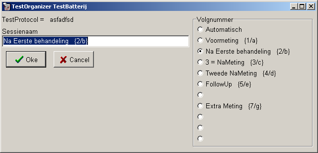
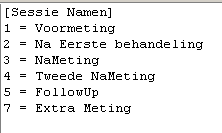

oktober 2008
Geforceerd SessieNummer
(Beschikbaar vanaf versie 18.1)
Probleem stelling
Tot nu was het zo dat het volgnummer (index) van een test automatisch door de TestOrganizer werd bepaald. In vele gevallen is het echter wenselijk (b.v. voor de moderne rapport vorm) dat er een specifiek volgnummer wordt gebruikt, om bijvoorbeeld een "Nameting" eenvoudig te kunnen lokaliseren. Momenteel is het mogelijk een nummer te forceren, door het juiste aantal dummy testen toe te voegen. Dit is echter een arbeidsintensieve en fout-gevoelige methode. De hieronder voorgestelde wijziging geeft de mogelijkheid om op eenvoudige en betrouwbare wijze het volgnummer te forceren.
Volgnummer forceren
Zodra een test of batterij wordt toegevoegd aan de patiënt / proefpersoon, wordt om de sessienaam omschrijving gevraagd (uiteraard moet wel het vinkje "sessienaam omschrijving" aan staan). Het invullen van de sessienaam verloopt via het onderstaande venster. Door nu op een element in het volgnummer lijstje te klikken, wordt de betreffende tekst ingevuld in de sessienaam. Het volgnummer lijstje kan ( per TestOrganizer) door de gebruiker zelf worden gewijzigd, waarbij een maximum van 10 teksten kan worden opgegeven, die door het programma worden gekoppeld aan volgnummers 1..10 (a..j). Het eerste element ("Automatisch") wordt door de TestOrganizer aangemaakt en is dus altijd aanwezig. Na het aanklikken en daarmee overhalen van de tekst, kan de tekst in de sessienaam zonodig worden gewijzigd, waarbij niet de tekst tussen spek-haken mag worden gewijzigd, aangezien deze gegevens door het programma worden gebruikt. Het is dus ook mogelijk niet gebruik van het lijstje te maken en handmatig de tekst te voorzien van bijvoorbeeld "{16/p}", ook dan zal het programma de test uitvoeren als de 16e test met index 16 of p, afhankelijk van de testsoort. Bij het handmatig toevoegen van nummer / letter combinatie, moet deze wel kloppen, zo zal de tekst "{16/e}" gewoon tot automatische nummering leiden (omdat "e" niet de zestiende letter van het alfabet is. Bij het toevoegen van meerdere testen aan één patiënt, blijft de sessienaam behouden.

Aanmaken / wijzigen volgnummer lijstje
In het ini-bestand, waarmee de TestOrganizer wordt opgestart, dienen de gegevens als volgt te worden ingevuld:

De plaats in het bestand is niet kritisch.
Er mogen nummers worden overgeslagen, in het bovenstaande lijstje is nummer 6 niet ingevuld, en dat is ook in het venster boven te zien.
Het eerste item ("Automatisch") moet niet in het lijstje worden opgenomen.
De toevoeging tussen spek_haken, b.v. "(4/d)" moet ook niet in het lijstje worden opgenomen, het programma genereert dit automatisch.